Primii pași · Lecția 006
Cât e ceasul?
Întreabă și spune cât este ceasul. Compară expresiile de timp cu reprezentările din ilustrații.
În această pagină
În această lecție vom învăța despre numere, precum și despre noțiuni de timp în limba maghiară. Să începem cu numerele:
1 - egy
2 - kettő/két (explicația mai jos) 3 - három
4 - négy
5 - öt
6 - hat
7 - hét
8 - nyolc
9 - kilenc
10 - tíz
Între 11 și 19, numerele se formează cu tizen- (aproximativ ca "spre zece" în română) și cifra unităților:
12 - tizenkettő
13 - tizenhárom
14 - tizennégy
15 - tizenöt
16 - tizenhat
17 - tizenhét
18 - tizennyolc
19 - tizenkilenc
Între 21 și 29, numerele se formează cu huszon- (ca "douăzeci-și" în română) și cifra unităților:
21 - huszonegy
22 - huszonkettő
23 - huszonhárom
24 - huszonnégy
25 - huszonöt
26 - huszonhat
27 - huszonhét
28 - huszonnyolc
29 - huszonkilenc
Între 31 și 39, numerele se formează cu harminc- ("treizeci") și cifra unităților:
31 - harmincegy
... 38 - harmincnyolc
39 - harminckilenc
Începând cu 40, numerele se formează după următorul sistem:
cifra zecilor (eventual cu o vocală scurtată) + -van sau
-ven (după regula armoniei vocalelor) + cifra unităților
41 - negyvenegy
42 - negyvenkettő
49 - negyvenkilenc
50 - ötven
60 - hatvan
70 - hetven
80 - nyolcvan
85 - nyolcvanöt
88 - nyolcvannyolc
90 - kilencven
97 - kilencvenhét
99 - kilencvenkilenc
Numerele de 3 cifre se spun în felul următor:
numărul sutelor (dacă este 1, se omite) + száz (o sută)
+ restul cifrelor
Numerele mai mari se formează cu ezer (o mie) și millió (un milion), în
mod similar ca în limba română.
156 - százötvenhat
200 - kétszáz
300 - háromszáz
400 - négyszáz
446 - négyszáznegyvenhat
789 - hétszáznyolcvankilenc
900 - kilencszáz
999 - kilencszázkilencvenkilenc
1000 - ezer
2000 - kétezer
10 000 - tízezer
20 000 - húszezer
26 000 - huszonhatezer
100 000 - százezer
1 000 000 - egy millió
2 000 000 - két millió
135 798 642 - százharmincötmillió-hétszázkilencvennyolcezer-hatszáznegyvenkettő
Ați observat că numărul 2 (kettő) mai are o formă:
két. Aceasta se folosește de obicei când numeralul are funcția de
atribut:
két gyermek doi copii.
Observăm aceeași formă în construcțiile kétmillió, kétezer,
kétszáz, etc. Folosim két în aceste cazuri și dacă apare după
alte cifre:
12 - tizenkettő, dar
12 óra - tizenkét óra (ora 12) și nu
tizenkettő óra, sau
72 ember - hetvenkét ember (72 oameni)
Mai recent, mai ales în Ungaria, se folosește kettő în loc de két în cazuri în care există riscul unei confuzii cu hét (7), de exemplu când vorbim la telefon sau când este vorba despre sume de bani. De exemplu am putea spune tizenkettő-ezer în loc de forma "corectă" tizenkétezer. Din motive similare câteodată (mult mai rar) se spune hetes în loc de hét, pentru a reduce riscul unei confuzii. De exemplu, putem auzi în emisiuni TV hetes-száz în loc de hétszáz (700).
Exercițiu:
Scrieți (și citiți) în maghiară următoarele numere (fără să vă uitați la tabelele de mai sus):
67
185
832
1 803
4 075
9 300
12 543
99 876
100 400
532 904
423 745 964
901 004 321
".
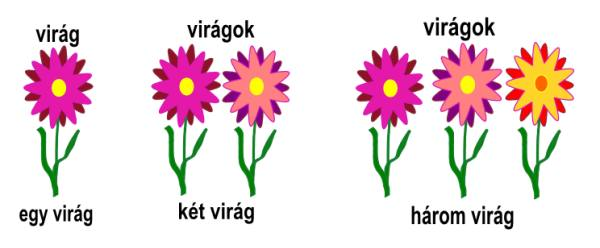
Vezi ilustrația în română
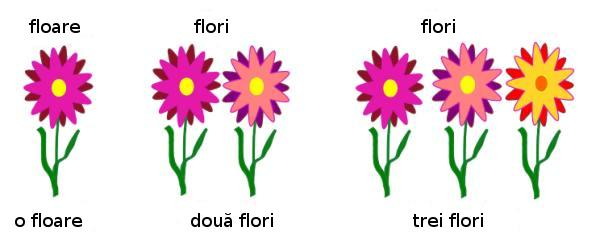
În această imagine observăm următoarele:
- Forma két în loc de kettő, când numeralul are funcția de atribut.
-
Substantivul rămâne la singular, când cantitatea este explicit exprimată de numeral
(așa cum am văzut și în lecția 005).
Așadar, spunem két virág, și nu
két virágok. Substantivul rămâne la singular, chiar dacă apar și alte cuvinte după numeral: két szép virág (două flori frumoase). Fără numeral, substantivul trebuie pus la plural: szép virágok (flori frumoase). - Acest efect al numeralului se transmite și la verb: A fa alatt két virág van (Sub copac sunt două flori). Observați că am spus van, adică forma la singular a verbului "a fi", deși este vorba despre mai multe flori. Fără numeral ar fi: A fa alatt virágok vannak (Sub copac sunt flori). Verbul se acordă deci în număr cu substantivul. Pare poate un pic complicat, dar ideea este doar că dacă cantitatea este deja exprimată prin numeral, ea nu mai trebuie semnalată în alte forme.
Să punem acum întrebări despre numere și cantități:
Mennyi? Cât(ă), Câți/Câte?
Folosim Hány? pentru obiecte numărabile, iar Mennyi? pentru cantități, de exemplu dintr-un anumit material. Diferența este similară ca între "how many?" și "how much?" în engleză.
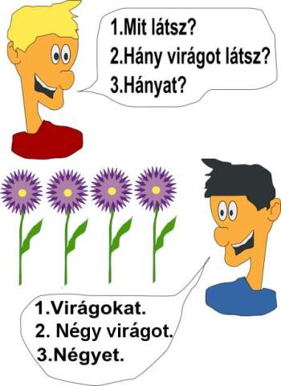
Vezi ilustrația în română
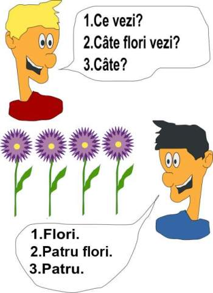
Alte exemple:
|
-Hány ház van itt? -Öt. -És ott hány van? -Ott három ház van. -Mennyi víz van itt? -Ötven liter. -Mennyi pénzt kérsz? -Száz lejt. -Mennyit? -Százat. |
-Câte case sunt aici? -Cinci. -Iar acolo câte sunt? -Acolo sunt trei case. -Câtă apă este aici? -Cincizeci de litri. -Câți bani vrei [lit. ceri]? -O sută de lei. -Cât? -O sută. |
Observații:
-
Numeralele pot fi și ele la cazul acuzativ, ceea ce se marchează la fel ca la
substantive.
Astfel: négy - négyet, öt - ötöt, hét - hetet, nyolc - nyolcat, száz - százat, ezer - ezret, etc. - Într-o expresie mai lungă doar substantivul se pune la acuzativ - dacă este prezent. În lipsa substantivului numeralul poate să preia acest rol. Chiar dacă avem mai multe adjective, doar substantivul trebuie pus la acuzativ: Mit látsz? Három szép, sárga virágot. (Ce vezi? Trei flori frumoase, galbene.)
- Pronumele hány/mennyi pot fi și ele la cazul acuzativ.
Cu hány/mennyi putem întreba despre timp:
Mennyi az idő? Cât e ceasul? [lit. Cât e timpul?]
Cel mai ușor putem răspunde în felul următor:
... óra, ... perc. Ora ..., ... minute.
Exemple:|
Tizenkét óra, huszonhat perc. Tizenegy óra és öt perc. Hét óra. Most öt óra van. Pontosan hét óra. |
Ora 12, 26 minute. Ora 11 și 5 minute. Ora 7. Acum este ora 5. (Este) exact ora 7. |
Putem spune și ora 17, ora 20, etc., dar în limba de zi cu zi, folosim mai mult expresiile de tip:
|
Hajnali 4 óra. Reggel 7 óra. Délelőtt 11 óra. Dél. Délután 4 óra. Este 8 óra. Éjjel 1 óra. |
4 în zori. 7 dimineața. 11 dimineața [lit. înainte de prânz]. Prânz. 4 după-amiaza. 8 seara. 1 noaptea. |
Ca și în limba română, există expresii mai practice (uneori aproximative) pentru a spune ora curentă, după cum vedeți din exemple:
|
fél negyed háromnegyed |
jumătate sfert trei sferturi |
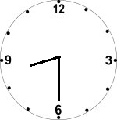
Fél kilenc Opt jumateAtenție! maghiarii spun "jumătate-nouă" când este 8:30. Logica este similară cu cea din limba germană, adică ora nouă este numai "pe jumătate plină".
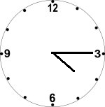
Negyed öt Patru și un sfertAtenție! ca și în cazul lui "fél", negyed 5 [lit. "sfert 5"] înseamnă de fapt "patru și un sfert".
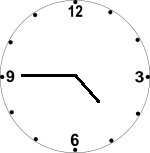
Háromnegyed öt Literal înseamnă "trei-sferturi-cinci", adică "5 fără un sfert".|
múlt múlva lesz perccel múlt ... perccel lesz ... perc múlva |
trecut peste va fi cu minute trecut cu ... minute va fi peste ... minute [lit. "va fi ... minute peste"] |
Exemple:
5 múlt 13 perccel (5:13)9 óra múlt 5 perccel (9:05)
4 perccel múlt 10 óra (10:04)
kilenc lesz tíz perc múlva (8:50) 9 fără 10 minute [lit. "nouă va fi zece minute peste"]
hét perc múlva 6 (5:53)
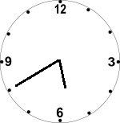
Fél 6 múlt tíz perccel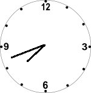
Háromnegyed 8 lesz 3 perc múlvaPutem întreba despre timp și cu:
Hánykor? La ce oră? [lit. La cât?]
Hány órakor? La ce oră?
Sufixul -kor este deci similar cu prefixul "la" din limba română, folosit însă numai când e vorba despre timp. De exemplu:
öt órakor (la ora cinci)ötkor (la cinci)
fél ötkor (la patru jumate)
délután háromkor (la trei după-amiaza)
Vedeți următorul dialog:
|
-Hány órakor jösz? -Este fél hétkor. -És mikor mész? -Hétkor. |
-La ce oră vii? -La șase jumate seara. -Și când pleci? -La șapte. |
O altă formulare este posibilă cu előtt (înainte) și után (după):
két perccel éjfél előtt (23:58)egy perccel tizenegy óra után (11:01)
fél hat után hét perccel (5:37)
fél előtt két perccel (?? nu se specifică ora, "jumate fără două minute")
este kilenc után tíz perccel (21:10)
Vocabular referitor la timp (câteva dintre cuvinte ați întâlnit deja în lecțiile trecute):
|
idő perc ... perccel másodperc |
timp minut cu ... minute secundă |
|
múlt lesz előtt után dél délelőtt délután éjfél hajnal reggel este |
trecut va fi înainte (atât în spațiu cât și în timp) după (atât în spațiu cât și în timp) prânz înainte de prânz după-amiază miezul nopții zori dimineața seara |
|
ma tegnap holnap holnapután tegnapelőtt sok most pontosan már még |
astăzi ieri mâine poimâine alaltăieri mult(ă) acum exact deja încă |
Exerciții:
- Citiți în cât mai multe feluri ora exactă de pe ceasurile din imagine. Cum ați spune unui prieten cât e ora? Cum s-ar spune la știrile TV aceeași oră?
- În propozițiile următoare lipsește câte un numeral sau substantiv. Puneți-le în forma corectă (substantivul poate fi la singular/plural, atât substantivul cât și numeralul pot fi la cazul nominativ/acuzativ):
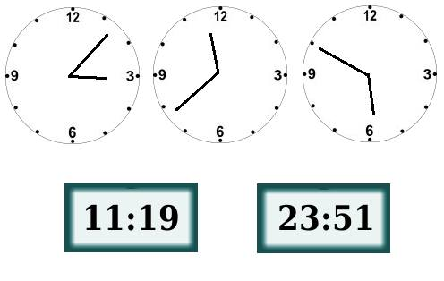
Hány autó van itt? (Câte mașini sunt aici?)
... (2) (Două.)
És a ház előtt hány autót látsz? (Iar în fața casei câte mașini vezi?)
Ott csak ... (1) (Acolo numai una.)
Az asztalon három ... (pohár) van. (Pe masă sunt trei pahare.)
Mik vannak az asztalon? (Ce sunt pe masă?)
... (pohár) (Pahare.)
Adjál ... (2) poharat. (Dă-mi două pahare.)
Hány poharat? (Câte pahare?)
... (2) (Două.)
A kertben sok ... (virág) van. (În grădină sunt multe flori.)
A kertben sok ... (virág) látok. (În grădină văd multe flori.)
A kertben ... (virág) vannak. (În grădină sunt flori.)
A kertben ... (virág) látok. (În grădină văd flori.)
A fa alatt ... (10) alma van. (Sub pom sunt zece mere.)
A fa alatt zöld ... (alma) vannak. (Sub pom sunt mere verzi.)
Az asztal mellett három ... (szék) látok. (Lângă masă văd trei scaune.)
Az asztal mellett ... (szék) látok. (Lângă masă văd scaune.)
" sau mai jos în comentarii.
În această lecție am învățat despre numere și despre expresii referitoare la timp. Am învățat destul de multe cuvinte noi. Dacă doriți să învățați și mai multe, citiți mai jos numele zilelor săptămânii și ale lunilor în maghiară. Numele lunilor sunt foarte similare cu cele din limba română. Numele zilelor săptămânii au origini diferite în cele două limbi (cu excepția cuvântului szombat "sâmbătă").
Zilele săptămânii:
| hétfő | kedd | szerda | csütörtök | péntek | szombat | vasárnap |
Lunile anului:
| január | február | március | április | május | június | július | augusztus | szeptember | október | november | december |
În sfârșit, cele patru anotimpuri, cu ilustrații corespunzătoare din cărțile de joc ungurești.
Nyár Vară
Ősz Toamnă
Tél Iarnă
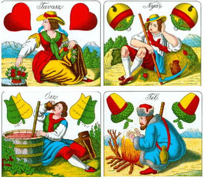